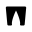
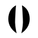
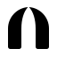

7개 방향을 생성해 3개 관점(의미 적합성 · Apple급 정제도 · 축소/모노크롬 확장성)으로 심사한 상위 3종입니다. 모두 currentColor 기반 단색 — 라이트/다크/골드 어디서나 한 색으로 깨끗하게 반전됩니다. 16px 파비콘까지 실루엣이 살아있도록 정제했습니다.

Veil아치형 성소 문(門)의 외곽이 솔리드로 채워지고, 그 네거티브 스페이스가 위로 솟은 첨두아치 통로가 됩니다 — 위로부터 찢어져(마 27:51) 이제 활짝 열린 문. V자 모노그램의 진화형으로, 두꺼운 벽 덕에 16px에서도 문이 닫히지 않습니다.

Veil마주 보는 두 폭의 휘장이 중심선을 따라 갈라지며, 위가 넓고 아래로 좁아지는 빛의 기둥을 남깁니다 — 위에서 아래로 찢어지는 그 방향 그대로. 가장 추상적이고 우아하며, 눈동자/조리개처럼 강렬한 아이콘성.

Veil둥근 성소의 돔(피난처의 반석)이 꼭대기부터 바닥까지 단번에 갈라져, 그 틈이 활짝 열린 문이 됩니다. 솔리드 2-패널이라 선이 가늘어질 일이 없어 작은 크기에서 가장 안정적입니다.